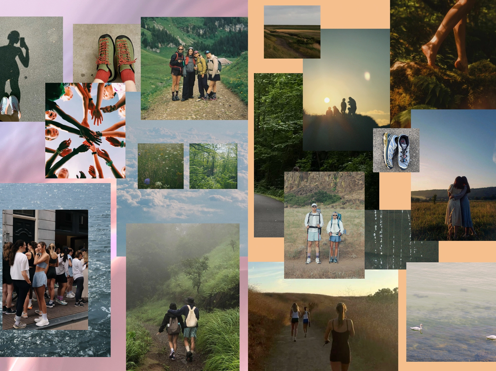
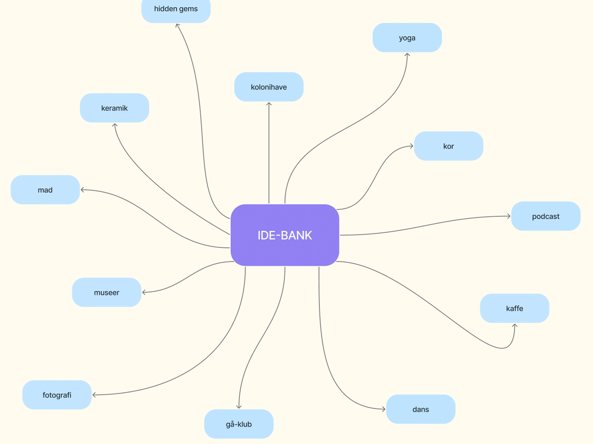
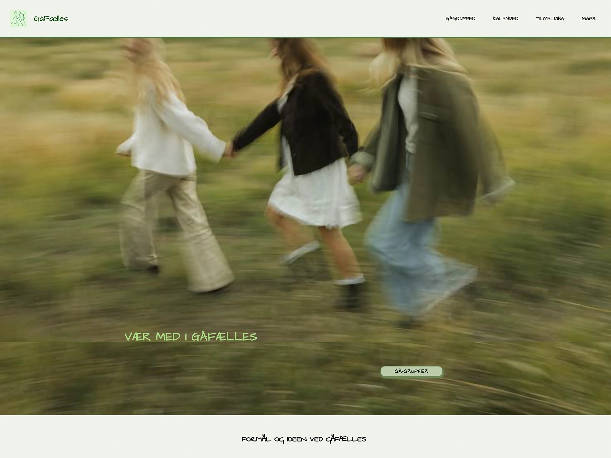
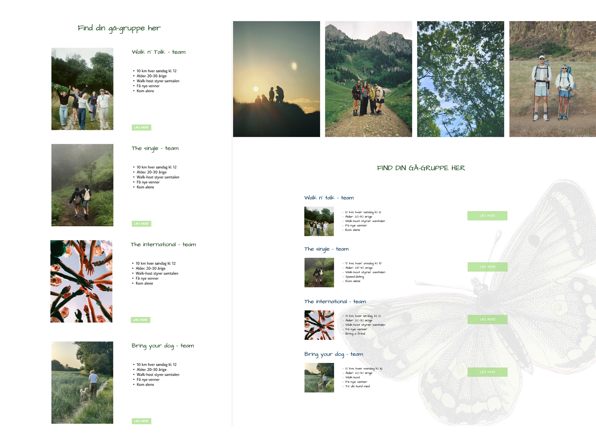

Tema 3 - grundlæggende UX/UI
Site: Emnesite
Formål
Formålet med tema 3 er at få erfaring med udvalgte UX/UI-metoder samt at lære hvordan man dokumenterer og præsenterer en design- og udviklingsproces. I temaet arbejdes der med hele designprocessen, fra research, idéudvikling, moodboards, sketching og styletiles til indholdsproduktion, wireframes og klikbar prototyping. Derudover lærer man at designe og udvikle visuelle elementer som logo og favicon, der er en del af det samlede visuelle udtryk. Man introduceres også for forskellige testmetoder, herunder tænke-højt-test, 5-sekunders-test og Likert-test, der anvendes til at indsamle indsigter og forbedre produktet.

Proces
Udviklingen af ”Emnesite” begyndte med en brainstorm. Her fik jeg idéen til at skabe en hjemmeside om en gåklub. Jeg valgte at arbejde videre med konceptet, selvom jeg i starten var usikker på idéen. Denne usikkerhed skyldtes primært, at det var første gang, jeg arbejdede med udvikling af en hjemmeside fra idé til færdigt produkt. Under temaet opnåede jeg en større forståelse for samspillet mellem UX og UI samt betydningen af designkonventioner. Jeg arbejdede med indholdsproduktion gennem indsamling, udvælgelse og redigering af billeder samt udarbejdelse af tekst tilpasset konceptet i ”Emnesite”. Det gav mig indsigt i, hvordan indhold struktureres og placeres på de forskellige sider for at understøtte brugerens flow og behov. I forbindelse med tænke-højt-testen blev jeg opmærksom på brugen af konventioner, hvilket gav værdifuld feedback til den videre designproces. Derudover fik jeg erfaring med Figma som værktøj til research, dokumentation og designudvikling. Særligt arbejdet med prototypen gav mig en bedre forståelse af sammenhængen mellem designbeslutninger og den efterfølgende implementering i VS Code.

Produkt
Produktet i tema 3 er ”Emnesite”, en hjemmeside om gåklubben ”Gåfælles”. På Gåfælles' hjemmeside kan brugerne tilmelde sig forskellige gåhold afhængigt af behov og interesse. Hjemmesiden indeholder fire HTML-sider og to CSS-filer. Den er opbygget med en enkel navigationsmenu og en overskuelig informationsstruktur, så brugeren hurtigt kan danne sig et overblik over de forskellige gåhold. Forsiden introducerer konceptet, mens en oversigtsside præsenterer de forskellige gåhold. Herfra kan brugeren klikke sig videre via en CTA til en informationsside med flere detaljer om det valgte hold. Det visuelle udtryk er skabt med udgangspunkt i en gennemgående grøn farvepalette inspireret af billederne på hjemmesiden. Header og footer har et ensartet design på tværs af alle sider for at skabe genkendelighed.
Se site her
Læring
I tema 3 har jeg arbejdet med at designe en hjemmeside fra bunden med et gennemgående koncept. Gennem forløbet lærte jeg at dokumentere designprocessen i Figma og fik erfaring med at udvikle wireframes og en klikbar prototype. Her blev jeg særligt opmærksom på, hvor stor betydning valg af skærmstørrelse har for designet, og hvor vigtigt det er at anvende mobile-first-princippet allerede i prototypefasen. Gennem tests af min prototype fik jeg værdifulde indsigter i, hvordan andre oplever mit design, og hvordan selv mindre justeringer kan forbedre brugeroplevelsen. Derudover blev jeg opmærksom på, at jeg finder valg af farver og typografi udfordrende. Derfor oplever jeg, at det visuelle udtryk på hjemmesiden ikke helt lever op til mine ambitioner. Jeg erfarede, at det var mere krævende at skabe en sammenhængende visuel identitet end at arbejde med struktur, layout og funktionalitet på hjemmesiden. Fremadrettet ønsker jeg at udvikle mine kompetencer inden for visuel identitet, farvesammensætning og typografi, så jeg bliver bedre til at skabe et mere gennemført og sammenhængende visuelt udtryk.
